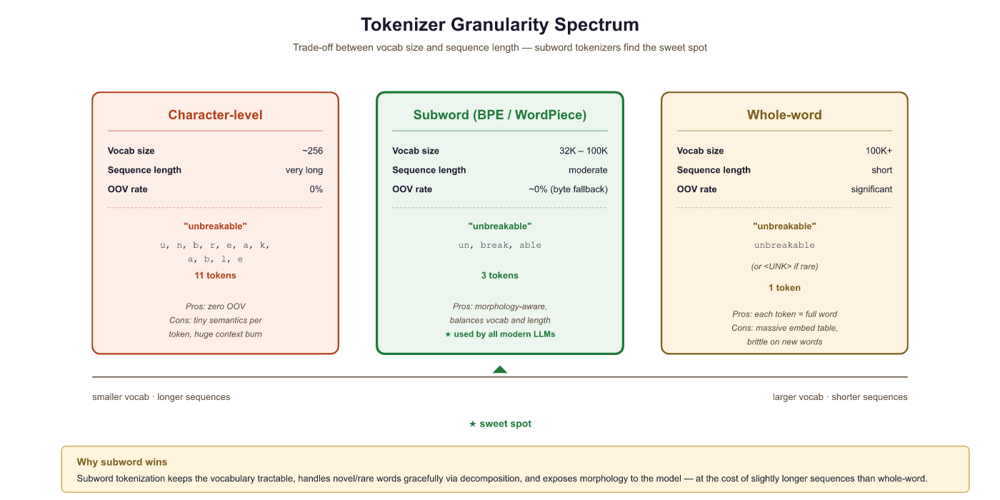
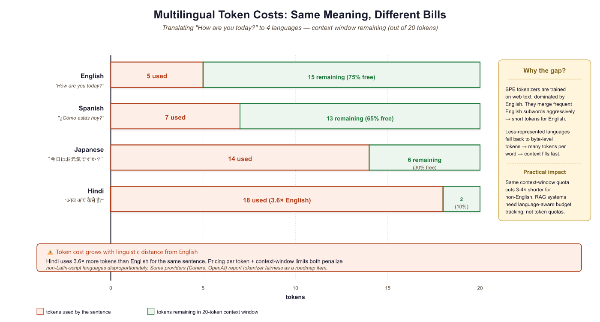
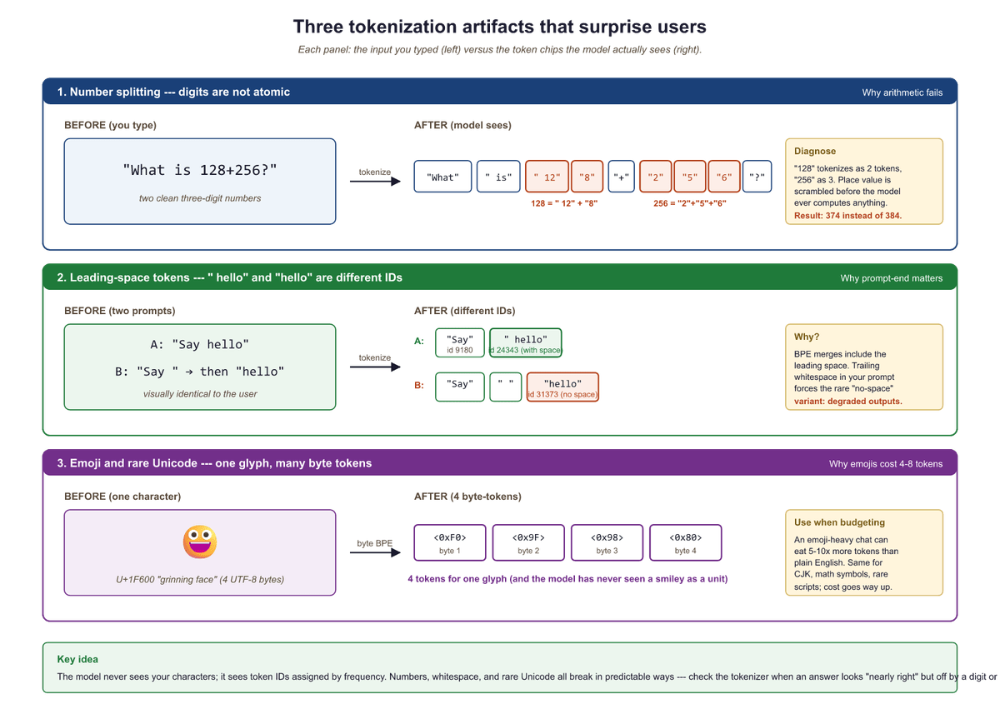

"Tokenization is easy," I said, right before the Thai sentence without spaces reduced me to individual Unicode code points.
Token, Whitespace-Challenged AI Agent
Think of tokenization as choosing the alphabet for your model's language. If your alphabet has too few symbols, you need long strings to express simple ideas. If it has too many, you waste memory storing symbols you rarely use. Every modern LLM navigates this tradeoff, and the choices have real consequences for users. Building on the text representation foundations from Section 1.1, tokenization is the first concrete step in converting raw text into the numerical inputs a model processes.
A tokenizer does not speak English; it speaks "which byte-pairs appear most often." That is why "unhappiness" becomes ["un", "happiness"] but "strawberry" becomes ["straw", "berry"], and why the model cannot tell you how many r's are in either.
Introduction: The Invisible Gateway
Before a language model can process a single word, it must first decide what a "word" even means. In Chapter 1, you learned how to represent words as vectors using techniques from Bag-of-Words to Word2Vec, but all those methods assumed that the "words" were already given to you. How does a model decide where one word ends and the next begins? How does it handle misspellings, compound words, or languages that do not use spaces? That is the problem of tokenization.
When you type a prompt into ChatGPT, Claude, or any other language model, your text does not enter the model as characters or words. Instead, it passes through a tokenizer, a preprocessing step that chops your input into discrete units called tokens. These tokens are the atoms of the model's universe: every parameter, every computation, and every output is defined in terms of them. Yet tokenization is often treated as a footnote, a plumbing detail that receives far less attention than attention heads or loss functions.
This section argues that tokenization deserves center stage. The way you split text into tokens determines how large your vocabulary is, how long your sequences become, how much each API call costs, and what kinds of errors the model makes. A poor tokenization scheme can cripple an otherwise excellent model; a thoughtful one can quietly improve everything from multilingual performance to arithmetic reasoning.
When you pay for an API call, you pay per token, not per word. When a model "runs out of context," it ran out of tokens, not words. When an LLM struggles with arithmetic, it is because digits were tokenized in unexpected ways. Understanding tokenization is not just academic; it directly affects your costs, your prompt engineering strategy, and the kinds of errors you will encounter in production.
The Vocabulary Size Tradeoff
LLMs are notoriously bad at counting letters in words, and tokenization is the culprit. Ask a model how many "r"s are in "strawberry" and it may confidently answer two, because the word was split into tokens like ["str", "aw", "berry"] and the model never sees individual characters.
At one extreme, you could tokenize text one character at a time. English has roughly 100 printable characters, so your vocabulary would be tiny and your embedding table would fit on a smart watch. But the sequence "machine learning" would become 16 tokens, forcing the model to spend precious context window space and computation just to reconstruct familiar words.
At the other extreme, you could give every word in the language its own token. English has hundreds of thousands of distinct word forms (including conjugations, pluralizations, and compounds), so your embedding table would balloon to gigabytes. Worse, any word not in your vocabulary (a typo, a new brand name, a word from another language) would be unrepresentable.
Modern text is stored using UTF-8, the standard encoding that represents each character as one to four bytes. Modern tokenizers live between these extremes by using subword units. Common words like "the" and "machine" get their own tokens, while rarer words are broken into recognizable pieces: "tokenization" might become ["token", "ization"], and "unhelpfulness" might become ["un", "help", "ful", "ness"]. This strategy keeps the vocabulary manageable (typically 32,000 to 128,000 tokens) while ensuring that any string can be encoded.
The Core Tradeoff
The fundamental relationship is simple. A larger vocabulary means fewer tokens per text, which means shorter sequences and more text fitting in the context window:
Larger vocabulary → fewer tokens per text → shorter sequences → more text fits in context window
Conversely, shrinking the vocabulary pushes in the opposite direction:
Smaller vocabulary → more tokens per text → longer sequences → less text fits in context window
But vocabulary size also affects model parameters. Every token in the vocabulary needs an embedding vector (typically 4,096 to 12,288 dimensions in modern LLMs). A vocabulary of 128,000 tokens with 4,096-dimensional embeddings consumes about 2 GB of parameters just for the embedding and output layers. That is not free.
The vocabulary size tradeoff is a direct manifestation of Shannon's source coding theorem from information theory. Shannon proved in 1948 that the optimal encoding of a message source assigns shorter codes to more frequent symbols and longer codes to rarer ones, with the theoretical minimum being the source entropy. BPE and WordPiece independently rediscover this principle: frequent words like "the" receive single tokens (short codes), while rare words are decomposed into multiple subword pieces (longer codes). The vocabulary size determines the codebook, and the resulting token count per text approximates the description length of the message. This is why subword tokenization works so well across languages: it automatically adapts the code length to the statistical structure of the corpus, approaching the information-theoretic optimum without anyone explicitly computing entropy.
One of the most persistent misconceptions among LLM practitioners is equating "token" with "word." They are not the same. A single word may be split into multiple tokens ("tokenization" becomes ["token", "ization"]), and a single token may span parts of multiple words (some tokenizers merge common bigrams like "of the" into one token). This distinction matters practically: when API pricing says "$10 per million tokens," a 500-word document might cost you 700 tokens or 1,200 tokens depending on the language, vocabulary, and content. Always check actual token counts using the tokenizer, never estimate from word counts.

Prerequisites
This section assumes familiarity with text representation concepts from Section 1.2: Text Preprocessing and word embeddings from Section 1.3. Understanding vocabulary, word frequency distributions, and the idea of mapping text to numbers will make the tokenization tradeoffs immediately clear.
Seeing the Tradeoff in Numbers
Let us make the tradeoff concrete with a quick Python experiment. We will compare how many tokens different granularities produce for the same English sentence.
# Comparing tokenization granularities
text = "Tokenization determines the model's vocabulary and sequence length."
# Character-level
char_tokens = list(text)
print(f"Character tokens: {len(char_tokens)} tokens")
print(f" Sample: {char_tokens[:10]}...")
# Whitespace word-level
word_tokens = text.split()
print(f"\nWord tokens: {len(word_tokens)} tokens")
print(f" Tokens: {word_tokens}")
# Subword-level (using tiktoken, GPT-4's tokenizer)
import tiktoken
enc = tiktoken.encoding_for_model("gpt-4")
subword_tokens = enc.encode(text)
print(f"\nSubword tokens (GPT-4): {len(subword_tokens)} tokens")
print(f" Decoded: {[enc.decode([t]) for t in subword_tokens]}")Notice that the subword tokenizer produces 11 tokens, compared to 66 for characters and 9 for words. The subword approach is nearly as compact as word-level, yet it handles the possessive "'s" and the suffix "ization" as separate reusable pieces. It can also handle any misspelling or novel word by falling back to smaller subword fragments.
Context Window and Cost Impact
Modern LLMs have a fixed context window measured in tokens: 4,096 tokens for early GPT-3, 128,000 for GPT-4 Turbo, and up to 1,000,000 for Gemini 1.5 Pro (as of 2025). The tokenizer determines how much raw text fits into that window. A tokenizer that is inefficient (uses too many tokens per word) effectively shrinks the model's context window from the user's perspective.
The Token Tax on Different Languages
This becomes especially important for non-English languages. Most popular tokenizers were trained primarily on English text, so English words tend to get their own tokens while words in other languages are split into many small pieces. The same semantic content in Japanese, Hindi, or Thai might consume 2x to 5x as many tokens as the English equivalent. This means non-English users get a smaller effective context window and pay more per API call for the same amount of meaning. Tokenizer fertility also affects chunking strategies for retrieval systems.
# Demonstrating the "token tax" across languages
import tiktoken
enc = tiktoken.encoding_for_model("gpt-4")
texts = {
"English": "Artificial intelligence is transforming the world.",
"Spanish": "La inteligencia artificial está transformando el mundo.",
"Japanese": "人工知能は世界を変えつつある。",
"Hindi": "कृत्रिम बुद्धिमत्ता दुनिया को बदल रही है।",
}
for lang, text in texts.items():
tokens = enc.encode(text)
ratio = len(tokens) / len(text.split())
print(f"{lang:10s}: {len(tokens):3d} tokens, "
f"{len(text.split()):2d} words, "
f"ratio = {ratio:.1f} tokens/word")A user writing in Hindi effectively pays 3 to 4 times more per API call than an English user expressing the same idea. This is not a flaw in the model architecture; it is a direct consequence of tokenizer training data being skewed toward English. Newer models (Llama-3, GPT-4o) are addressing this by training tokenizers on more balanced multilingual corpora, but the gap has not been fully closed. Retraining a tokenizer requires retraining the entire model, since the embedding layer is sized to the vocabulary. This makes tokenizer changes extremely expensive.
The Japanese row shows "1 word" because text.split() splits on whitespace and Japanese does not use spaces. The 14.0 tokens-per-word ratio is therefore an artifact of measurement, not a fair fertility number. The fair metric is tokens per character or tokens per UTF-8 byte. Once you switch to that, Japanese still pays a tax, but a smaller one (typically 1.5x to 2.5x English, not 14x). Whenever you compare tokenizers across languages, fix the denominator before comparing.
Cost Arithmetic
API providers charge per token. Pricing varies by model and provider: as of early 2025, rates range from roughly $1 to $30 per million input tokens depending on the model. If your application processes 10 million words per day, the choice of tokenizer directly affects your monthly bill:
| Tokenizer Efficiency | Tokens per Word | Tokens / Day | Monthly Cost (approx.) |
|---|---|---|---|
| Efficient (English text) | 1.2 | 12M | $3,600 |
| Average (mixed languages) | 2.0 | 20M | $6,000 |
| Inefficient (CJK heavy) | 3.5 | 35M | $10,500 |
The difference between 1.2 and 3.5 tokens per word is nearly a 3x cost multiplier. Understanding your tokenizer's behavior on your specific data is not an academic exercise; it has direct financial implications.
Who: Backend engineer at a fintech startup serving Southeast Asian markets
Situation: Building a customer support chatbot deployed across English, Thai, and Vietnamese
Problem: Monthly API costs hit $18,000, triple the $6,000 budget, despite moderate traffic of 40,000 conversations per month
Dilemma: Cut features and conversation depth, or find a way to reduce token consumption without degrading quality
Decision: Profiled token counts by language and discovered Thai queries consumed 3.8x more tokens than equivalent English queries
How: Switched from GPT-4 to GPT-4o (which has a more balanced multilingual tokenizer), shortened the system prompt from 380 tokens to 95 tokens, and added a token-counting middleware that flags queries likely to exceed 2,000 tokens for pre-summarization
Result: Monthly costs dropped to $7,200 (60% reduction). Thai token fertility improved from 3.8x to 2.1x relative to English with the new tokenizer
Lesson: Always profile your tokenizer on real data in every target language before committing to a cost estimate. The "token tax" on non-English languages can silently multiply your budget.

Tokenization Artifacts and Their Downstream Effects
Tokenization is not a lossless compression of text. The boundaries where the tokenizer decides to split (or not split) create artifacts that propagate through the model's behavior. Some of these artifacts are subtle; others cause spectacular failures.
Artifact 1: Inconsistent Splitting
The same word can be tokenized differently depending on context. Leading spaces, capitalization, and surrounding punctuation all affect how a subword tokenizer segments text. Consider how GPT-4's tokenizer handles the word "token" in different contexts:
# Demonstrating context-sensitive tokenization
import tiktoken
enc = tiktoken.encoding_for_model("gpt-4")
examples = [
"token", # bare word
" token", # with leading space
"Token", # capitalized
"TOKEN", # all caps
"tokenization", # as part of longer word
" tokenization", # with leading space, longer word
]
for ex in examples:
ids = enc.encode(ex)
pieces = [enc.decode([i]) for i in ids]
print(f" {repr(ex):25s} => {pieces}")Notice that "token" and " token" (with a leading space) are entirely different tokens in the vocabulary. This is by design: leading spaces are attached to the following word so that the tokenizer can reconstruct the original text faithfully. But it means the model sees different input IDs for what a human would consider the same word. The model must learn that these represent the same concept, which requires extra training data and capacity.
Artifact 2: Arithmetic Failures
One of the most widely discussed tokenization artifacts is the difficulty LLMs have with arithmetic. Numbers are tokenized inconsistently: "380" might be a single token, "381" might be split into ["38", "1"], and "3810" might become ["38", "10"]. The model has no built-in notion that these tokens represent digits in a positional number system. It must learn addition, subtraction, and other operations from patterns in the training data, and the inconsistent tokenization makes this much harder.
# See how numbers tokenize differently
import tiktoken
enc = tiktoken.encoding_for_model("gpt-4")
numbers = ["128+256", "100+200", "3810", "381", "380"]
for num in numbers:
ids = enc.encode(num)
pieces = [enc.decode([i]) for i in ids]
print(f" {num:10s} => {pieces}")Notice how "380" is a single token but "381" splits into ["38", "1"], and "3810" becomes ["38", "10"]. The model receives entirely different representations for numbers that differ by just one digit. This inconsistency is a major reason why LLMs struggle with arithmetic.
When a model sees "What is 1234 + 5678?", the tokenizer might produce ["12", "34", " +", " ", "56", "78"]. The model does not see individual digits aligned in columns the way a human would when doing manual addition. It must learn to parse multi-digit numbers from arbitrary token boundaries, align them mentally, and compute carries. This is one reason why tool-use (calling a calculator) is so important for production LLM systems.
Who: ML engineer at an accounting automation company
Situation: Building an LLM-powered invoice parser that extracts line-item totals and computes subtotals
Problem: The model correctly extracted dollar amounts 94% of the time, but the computed subtotals were wrong in 23% of cases, especially for amounts above $1,000
Dilemma: Fine-tune the model on more arithmetic examples, or add external validation
Decision: Investigated tokenization and found that numbers like "$1,234.56" were split into ["$1", ",", "234", ".", "56"], making arithmetic nearly impossible for the model
How: Changed the pipeline so the LLM only extracts the raw numbers as strings, then a deterministic Python function parses and sums them. Added a verification step that re-checks extracted amounts against the original text
Result: Subtotal accuracy jumped from 77% to 99.6%. The pipeline ran faster because the model no longer needed chain-of-thought prompting for arithmetic
Lesson: Never rely on LLMs for arithmetic in production. Tokenization splits numbers unpredictably, so always delegate math to deterministic code.
Artifact 3: The "Trailing Space" Problem
Because many tokenizers attach leading whitespace to tokens, the model treats " Hello" and "Hello" as fundamentally different inputs. This can cause unexpected behavior when building prompts programmatically. If you accidentally include or omit a space before a key word, the model may interpret it differently. This is especially tricky in few-shot prompting, where consistent formatting is critical.
Artifact 4: Tokenization of Code
Programming languages create unique challenges. Indentation is semantically meaningful in Python, yet a tokenizer may split indentation inconsistently. Four spaces might be one token in one context and two tokens in another. Variable names in camelCase or snake_case get split at different points. Modern tokenizers (like those used in code-focused models such as Codex or StarCoder) address this by including common indentation patterns and code-specific tokens in their vocabulary.
# How code gets tokenized (using tiktoken)
import tiktoken
enc = tiktoken.encoding_for_model("gpt-4")
code = """def fibonacci(n):
if n <= 1:
return n
return fibonacci(n-1) + fibonacci(n-2)"""
tokens = enc.encode(code)
pieces = [enc.decode([t]) for t in tokens]
print(f"Total tokens: {len(tokens)}")
print(f"Token pieces: {pieces}")Notice how indentation, newlines, and even the function name get merged into multi-character tokens. The four-space indentation appears as a single token in some lines but might be split differently in others, depending on what follows.

Practical Implications for Builders
If you are building applications on top of LLMs, tokenization behavior should inform several design decisions:
-
Prompt budgeting: Always count tokens, not words or characters,
when estimating whether your prompt fits in the context window. Use the model
provider's tokenizer library (such as
tiktokenfor OpenAI models or the Hugging Facetokenizerslibrary) to get exact counts. - Multilingual applications: Test your prompts in all target languages to understand the token expansion factor. You may need larger context windows or shorter system prompts for languages that tokenize less efficiently.
- Structured output: JSON, XML, and other structured formats use delimiters (braces, brackets, quotes) that each consume tokens. A compact JSON response uses fewer tokens than a verbose one, directly reducing cost.
- Retrieval-Augmented Generation (RAG): When chunking documents for retrieval, chunk by token count rather than by word count or character count to avoid exceeding context limits.
Tokenization is the lens through which your model sees the world. Understanding that lens, including its distortions, is essential for building reliable AI applications. Every time a model behaves unexpectedly, ask yourself: how did the tokenizer represent this input?
Rule of thumb: When in doubt, use the tokenizer that shipped with your model. Never mix tokenizers and models.
Before building a pipeline around any tokenizer, test it on numbers, code snippets, URLs, and multilingual text. Many subtle bugs come from unexpected token splits. The tokenizer.tokenize() method (without encoding) is your best debugging friend.
Tokenizer-free models are an active research frontier. Byte-level models like ByT5 and MegaByte process raw bytes without any tokenization, eliminating the entire tokenization pipeline. However, they require significantly more compute. Hybrid approaches (byte-level fallback with subword primary) offer a middle ground. Meanwhile, the multilingual tokenization gap remains: GPT-4 requires 3 to 4x more tokens for languages like Thai, Burmese, and Amharic compared to English, directly affecting API costs and effective context length.
- Tokenization is the first processing step in any LLM pipeline, converting raw text into the discrete units that the model actually processes.
- The vocabulary size tradeoff is the central tension: larger vocabularies produce shorter sequences but consume more parameters; smaller vocabularies do the opposite. Subword tokenization occupies the practical sweet spot.
- Context windows are measured in tokens, not words. Tokenizer efficiency directly determines how much text fits in the window and how much each API call costs.
- Non-English languages often suffer a "token tax" because tokenizers trained on English-dominated corpora produce more tokens per word for other languages.
- Tokenization artifacts (inconsistent splitting, number fragmentation, whitespace sensitivity) propagate through the model and can cause unexpected failures in tasks like arithmetic, code generation, and multilingual processing.
- Always count tokens, not words, when budgeting context windows, estimating costs, or chunking documents for retrieval-augmented generation.
Show Answer
Show Answer
Show Answer
Show Answer
Show Answer
Exercises
(a) State the failure mode of a 100-token vocabulary (character-level) for a transformer language model. (b) State the failure mode of a 5,000,000-token vocabulary (word-level with full coverage). (c) Explain why subword tokenizers (BPE-style) hit a sweet spot, and what the "right" vocabulary size is for a frontier LLM in 2025.
Answer Sketch
(a) Character-level forces the model to spend representation capacity learning that "t-h-e" is a unit; sequence lengths balloon (10x English text vs subword), and attention cost grows quadratically with sequence length. (b) Word-level vocabularies hit OOV problems for any new word (typo, name, code identifier) and hugely inflate the embedding table (5M x 4096 = 20B params just for embeddings on a 4K-dim model). (c) Subwords adapt to data: common words become single tokens, rare or novel words decompose into pieces. The 2025 sweet spot for English-centric LLMs is roughly 100K-200K tokens; multilingual models extend to 250K-300K to maintain coverage across scripts.
You are building a system that processes US legal documents averaging 8,000 English words. (a) Predict the cl100k_base token count. (b) If you switched to a custom legal-domain tokenizer trained on 100M legal tokens, how would the count change? (c) What is the cost implication at API scale of 100K documents/month?
Answer Sketch
(a) cl100k_base averages roughly 1.3 tokens per English word; 8000 words = ~10,400 tokens. (b) A domain-specific tokenizer (trained on legal text) typically improves fertility (tokens per word) by 10-20% on its target domain because legal phrases ("party of the first part", multi-token contract clauses) compress to fewer tokens. New count: ~8,500-9,000 tokens. (c) At 100K docs/month, the savings are ~15-20% of input tokens. At $5/M input on a frontier model, that's roughly $80-$100/month for just one document type. The savings can be larger for non-English or specialized domains; it adds up for high-volume products.
Sketch a 6-line wrapper that counts tokens for any prompt before sending it to the API and returns a cost estimate using the OpenAI tiktoken library. State why you should call this even when you trust your prompt template.
Answer Sketch
import tiktoken
enc = tiktoken.get_encoding("cl100k_base")
PRICE = {"gpt-4o": (5, 15)} # $/M input, $/M output
def estimate(prompt, model="gpt-4o", expected_out=500):
n_in = len(enc.encode(prompt))
p_in, p_out = PRICE[model]
return {"in_tokens": n_in, "est_cost_usd": (n_in * p_in + expected_out * p_out) / 1_000_000}Why call it even with trusted prompts: at runtime, prompts often include user-supplied content (uploaded documents, conversation history) whose size is unbounded. The check catches accidental 100K-token inputs before they hit the API. Pair it with a pre-call cap that rejects oversized inputs and surfaces a friendly error to the user instead of a five-figure surprise on the bill.
List four product bugs caused by tokenization artifacts you can observe in real LLM applications, and the diagnostic / fix for each.
Answer Sketch
(1) Number-handling errors: "1234567" tokenizes as multiple pieces, hurting arithmetic. Diagnostic: failures concentrated on multi-digit math. Fix: tokenize digits individually (newer tokenizers do this) or route math to a tool. (2) Prompt injection via uncommon Unicode: zero-width chars and lookalike scripts tokenize unexpectedly and bypass keyword filters. Fix: normalize Unicode before tokenizing and after filtering. (3) Inflated cost on non-English content: a Hindi customer's prompt costs 3-4x what an English equivalent does. Fix: tokenizer-aware cost estimates; consider models with multilingual-friendly tokenizers. (4) Truncation at non-semantic boundaries: max_tokens cuts mid-word in JSON output, breaking parsers. Fix: stream and parse, or use structured-output features that respect schema boundaries. The recurring lesson: tokens are the invisible substrate of every LLM application; bugs there look mysterious until you trace them to the tokenizer.
What's Next?
In the next section, Section 1.6: Subword Tokenization Algorithms, we dive into the specific subword tokenization algorithms (BPE, WordPiece, Unigram) used by modern LLMs.